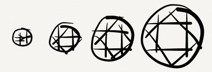
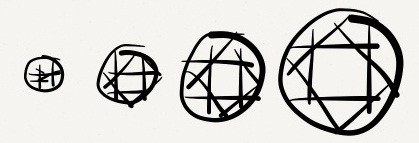
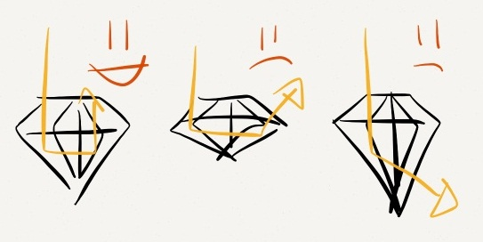
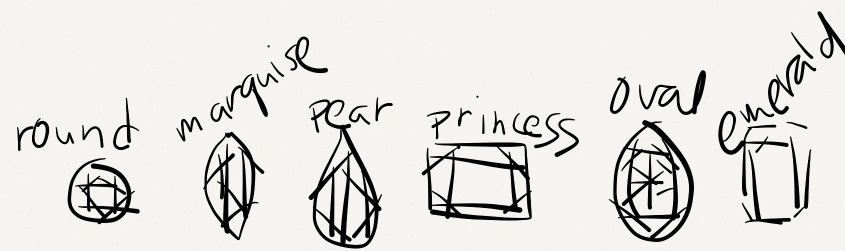

Carat(cr/CD)

Carat is the mass of the diamond. One carat weighs 200 milligrams. The higher the carat, the bigger the diamond.
For starters I'm a not gemologist :)
Some of my friends have asked details on how I purchased my engagement ring for Elain, I decided to write the specific things I had to know before getting that engagement ring. I thought, maybe other people might need some sort of definitive short list instead of swimming through search engine results.
I don't know about most people, but I'm not that type of guy that just walks into a store and buys something of high value without really knowing the facts and value surrounding it, and so I did some research. Weeks before I got Elain her ring, I really read up a lot on engagement rings and got into random conversations with jewelry store owners about rings in general. So here's some of the things I researched before grabbing a ring for Elain. Hopefully, this short "cheat sheet" would be useful to you as you talk with jewelers and hunt for your engagement ring.

Carat is the mass of the diamond. One carat weighs 200 milligrams. The higher the carat, the bigger the diamond.
To gemologists, diamonds are "clarity graded". It's determined by the amount of natural inclusions on the diamond.
What are inclusions?
Inclusions are a diamonds 'flaws', though most inclusions are nature's thumbprint to a diamond giving them a unique identity, they are barely visible to the naked eye, unless under a jeweler's magnifier or microscope. Inclusions may present themselves in such forms: carbon marks (black dots), feathers, bubbles, cracks, chips and etc. Inclusions can be internal or external, meaning the flaws could be inside the diamond or on the surface of the diamond. The lesser the inclusions, the more "fire" or sparkle the diamond has, and not to mention the higher their prices go.
| Clarit Grade. | Meaning |
|---|---|
| F | Flawless. Absolutely rare and expensive. |
| IF | Internally Flawless. |
| VVS1 / VVS2 | Very Very Slightly Included. Personally, the engagement ring I got for her is in this mark. |
| VS1 / VS2 | Very Slightly Included. |
| SI1 / SI2 | Slightly Included. |
| I1 / I2 / I3 | Included. |
Aside from "White", diamonds can come in other pretty different colors, and those "pretty colored" diamonds can get pretty expensive, but let's talk about the standard "White Diamond". Standard white diamonds have "color grades", the color grades determine if the diamond has presence of color in them. The more colorless the diamond gets, the more brilliance and sparkle, or "fire", the diamond has - not to mention the more expensive they get.
| Color Grade | Meaning |
|---|---|
| D - E - F | Colorless. (Absolutely rare and expensive) |
| G - H - I - J | Nearly colorless. When diamonds of G - H are placed near a diamond of master color grade, they're nearly identical. |
| K - L - M | Faint Yellow, like tinted white. |
| N - O - P - Q - R | Very Light Yellow. |
A diamond's cut is not equal to it's shape. The cut is the most important of all aspects in a diamond. A cut that's too deep, like the rightmost one, or a cut too shallow, like the middle one, would reflect lesser light. A diamond that's cut just right, like the leftmost one, reflects maximum brilliance or "fire". Great cuts = higher price.

| Cut grade | Explanation |
|---|---|
| Excellent | Maximum 'fire' and 'brilliance'. Reflects nearly all of the light that enters the diamond. |
| Very Good | Properly reflects most of the light that enters. |
| Good | Reflects majority of the light that enters. |
| Fair and Poor | Allows much of the light entering the diamond to escape from the sides or bottom, reducing brilliance. 'Poor' cut grade diamonds almost look dull and lifeless. |
A diamond can come in different shapes. The Round Brilliant is the most common shape for a diamond.

Commonly mistakened from Carat(cr/CD), a unit of mass, Carat(K/kt) is the measuring unit for the purity of gold. When gold is fashioned into jewelry, they put a little bit of other metals in them. The higher the Carat(K), the purer the gold, the lower the Carat(K), the more it has "other" metals in it.
Why would they put a little alloy?
Gold is very malleable, which means its a little bendy. Through years of use, any piece of gold jewelry will endure wear and tear. If used with pure gold, it would slowly get deformed, that's why they put 'other' metals to securely shape it. A jeweler would partially agree that 14K gold is better than 18K gold if the ring is constantly under physical stress since it contains lesser gold, and more 'harder' metals which makes it a little more resistant to stress.
Note: When you specify to use "White gold" on your ring, they make use of "plating". Over time, don't freak out if the ring slowly comes off as yellowish. Acids or other natural stress eventually turns your "white gold" ring back to its natural color; which is the yellow color of gold.
This is the part of the ring where it holds the diamond in place. Setting styles can be totally up to the jeweler, you can also choose the amount of prongs that would hold the diamond in place. 4 or 6 pronged Solitaire Tiffany settings are common choices. Personally, I knew Elain wanted a Solitaire Knife setting, so I got that for her with 6 prongs holding the rock.
Hopefully you learned something with this short-guide. One thing I haven't brought up is Cost. Cost is important, if you're on a tight budget, you could opt for pre-owned diamonds or try getting a ring with her birthstone on it, you can get great birthstones under tight budget.
Remember, don't be pressured. It's not the size of the rock or the glamour of the ring, it's the relationship with the one you truly love :) Happy ring hunting!
Contact me at devstuff@acesubido.com for advertisements